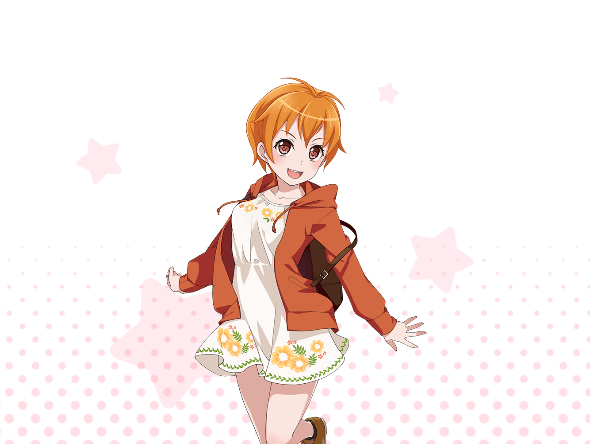

はぐみ
おわぁっと！
危ない危ない、ぶつかっちゃう～！
はぐみ
……っと……ギリギリセーフ！
あとちょっとで
ぶつかっちゃうとこだった！
はぐみ
ごめんなさーい！
大丈夫だった？
はぐみ
……って、あれ？
{{userName}}さんだあっ！
はぐみ
わー！
こんなところで会うなんて偶然だね！
はぐみ
はぐみね、
今スタジオに向かって走ってたんだよ！
はぐみ
今日はみんなで練習できる日だから
遅刻しないようにしないとって！
はぐみ
あっはは、そうだね。
全速で走っていったら疲れて
練習どころじゃなくなっちゃうかも！
はぐみ
……っていうか！
ちゃんと挨拶してなかった！
はぐみ
こんにちはー！ いつもおっつかれさまでーっす！！
はぐみ
はぐみね、あのライブハウスで演奏するの
だ～いすきなんだ！
あそこにいる人は、みんなとーってもいい笑顔してるよねっ
はぐみ
だから、これからも
ずっとずっとあそこで演奏したいなって思うんだ！
はぐみ
えへへ、よろしくね～！
はぐみ
……はい！ 挨拶、おしまいっ！！
ねねっ？ はぐみ、ちょっとかっこよくなかった？
ちゃんと挨拶できるギョーカイ人みたいな？
はぐみ
でしょでしょ、かっこいいでしょ！
やった～褒められちゃった！
はぐみ
はぐみ、まだ他にも挨拶の種類、知ってるよ！
例えば～、
『ザギンでシースー』みたいな？
はぐみ
ふふーん。すごいでしょ？
はぐみ、ちゃんと挨拶の勉強を……
はぐみ
あ！
……っていうかスタジオ行かなきゃ！！
はぐみ
やばい、走んないと遅刻しちゃう～！！
ダッシュ決定！
はぐみ
じゃあね！
練習頑張ってくるよ！！
はぐみ
うん、応援ありがとう！
まったね～！！
はぐみ
よぉっし、はぐみの全力ダーッシュ！！
いっけー！！